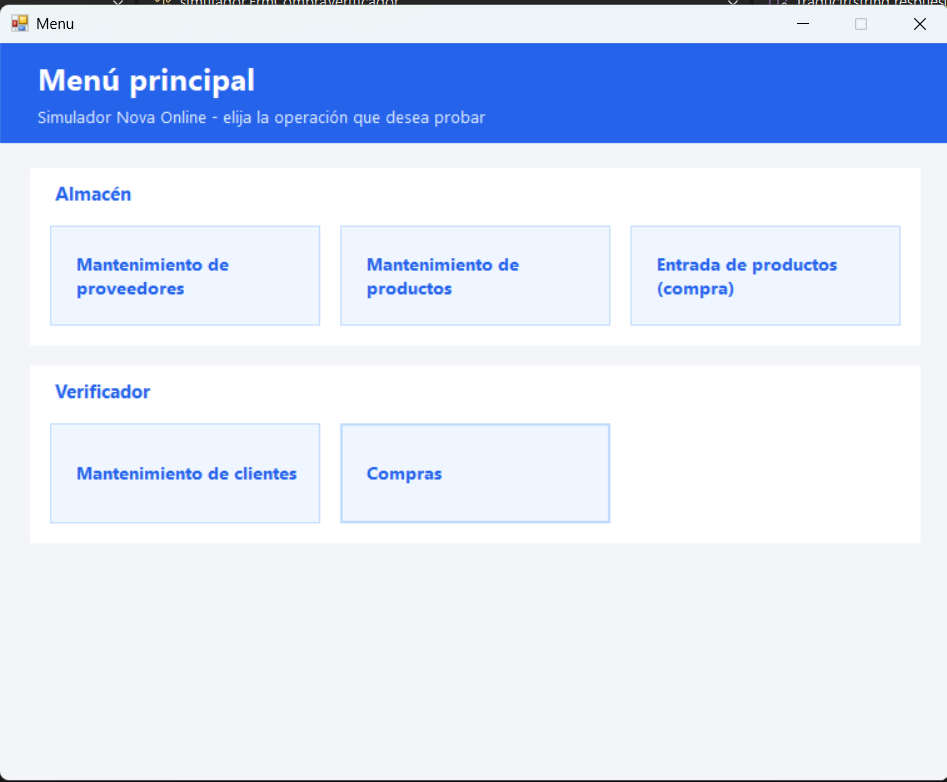
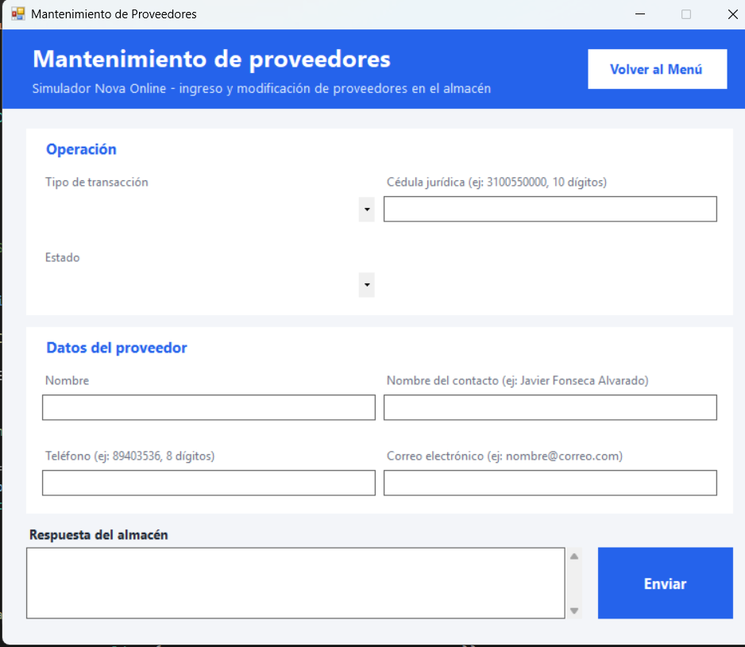
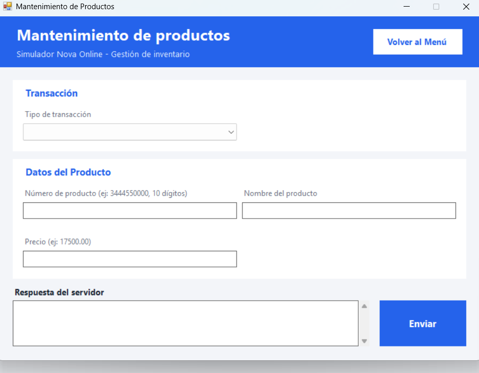
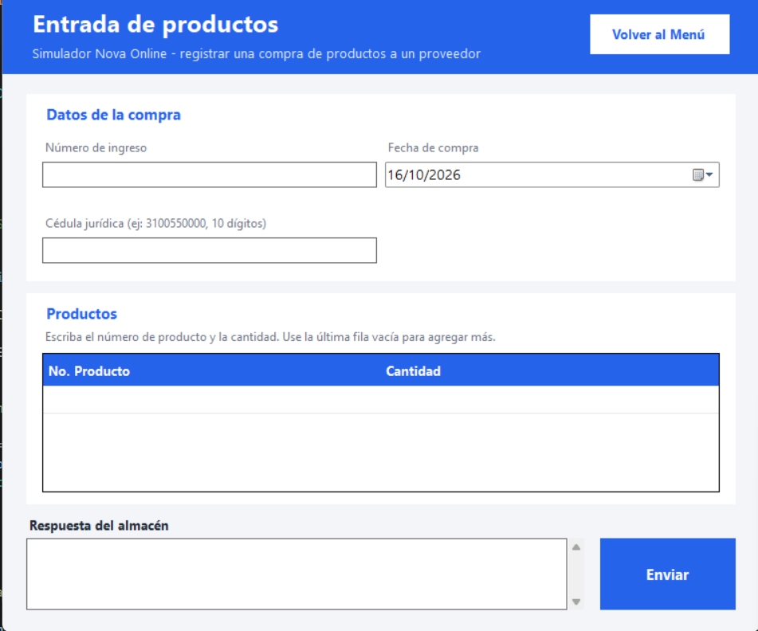
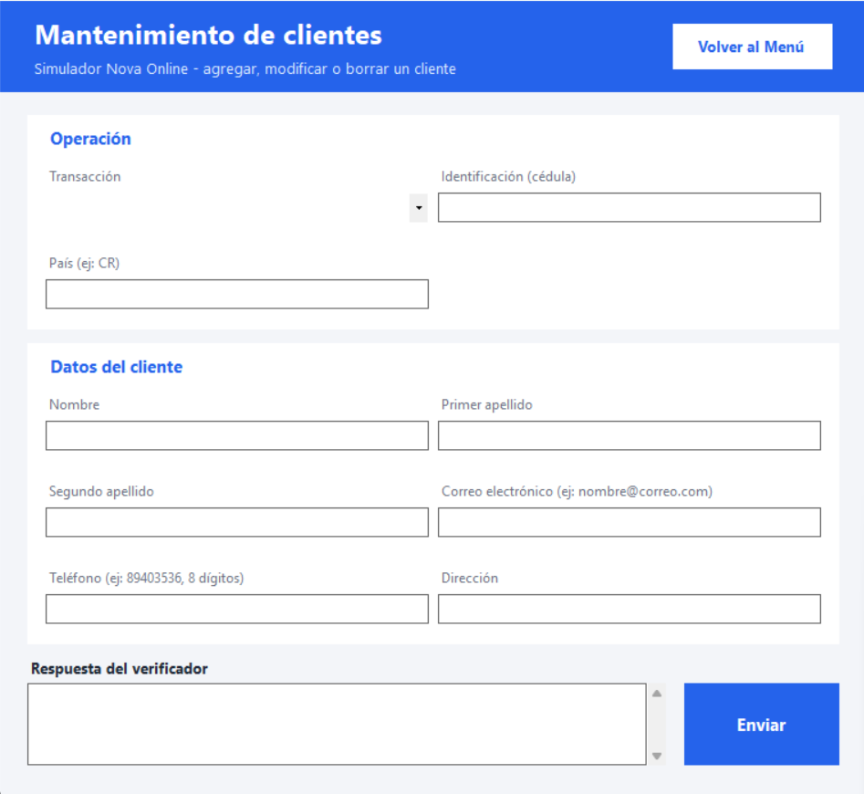
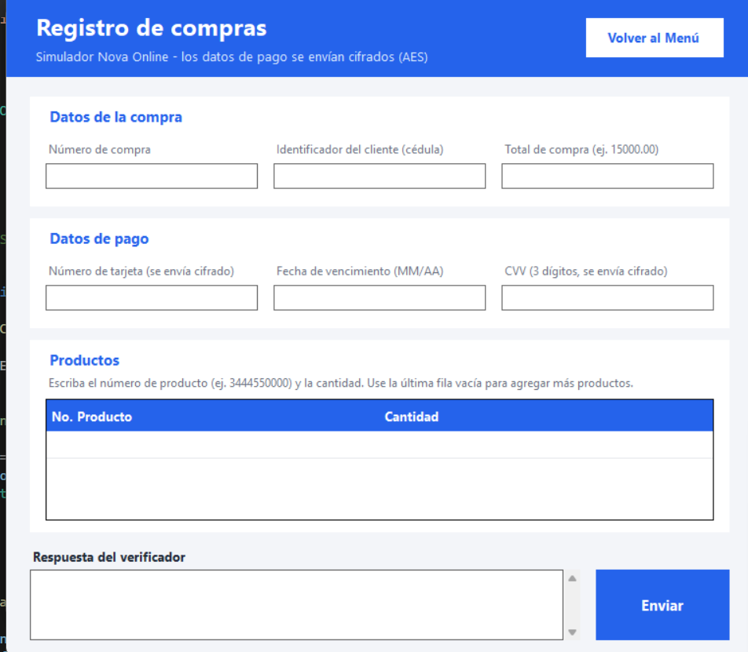

Sistema de Ventas y Distribución "Nova Online"
Proyecto I del curso Programación IV. Este proyecto se desarrolló junto a dos otros estudiantes y consistió en el desarrollo de un sistema integrado para la gestión de ventas y distribución, implementando una arquitectura distribuida (Cliente-Servidor) utilizando múltiples lenguajes de programación y bases de datos.
Tecnologías usadas
| Tecnología | Uso en el proyecto |
|---|---|
| Java (Sockets, Threads, JDBC) | Desarrollo del servidor backend del Almacén. Manejo de concurrencia multihilo, parsing de tramas y conexión a base de datos. |
| C# (.NET WinForms) | Creación de un "Simulador" o cliente ligero con interfaz gráfica para capturar datos y enviar tramas al servidor. |
| SQL Server (T-SQL) | Base de datos principal del Almacén, lógica de negocio centralizada mediante Procedimientos Almacenados. |
| Python & MySQL | Desarrollo de un servidor verificador secundario para procesar validaciones externas. |
Cómo funciona
- El usuario interactúa con la interfaz gráfica del simulador en C# para registrar un proveedor, producto o una compra.
- El simulador recopila los datos ingresados, arma una trama de texto plano estructurada y la envía a través de la red (Sockets TCP/IP) hacia el puerto 5000.
- El servidor backend en Java recibe la petición y crea un nuevo hilo (
ClienteHandler) para procesarla sin bloquear el sistema para otros usuarios. - Un parser en Java descompone la trama recibida, extrayendo los datos individuales y ejecutando las validaciones iniciales de las reglas de negocio.
- Mediante JDBC, Java invoca procedimientos almacenados en SQL Server dentro de una transacción segura (
setAutoCommit(false)) asegurando que, si un detalle de compra falla, se realice un rollback para mantener la integridad del inventario. - El servidor responde al cliente C# con códigos de estado ("EXITOSO", "DATO INVALIDO") y se genera un registro de auditoría en formato JSON en la bitácora del sistema.
Capturas





